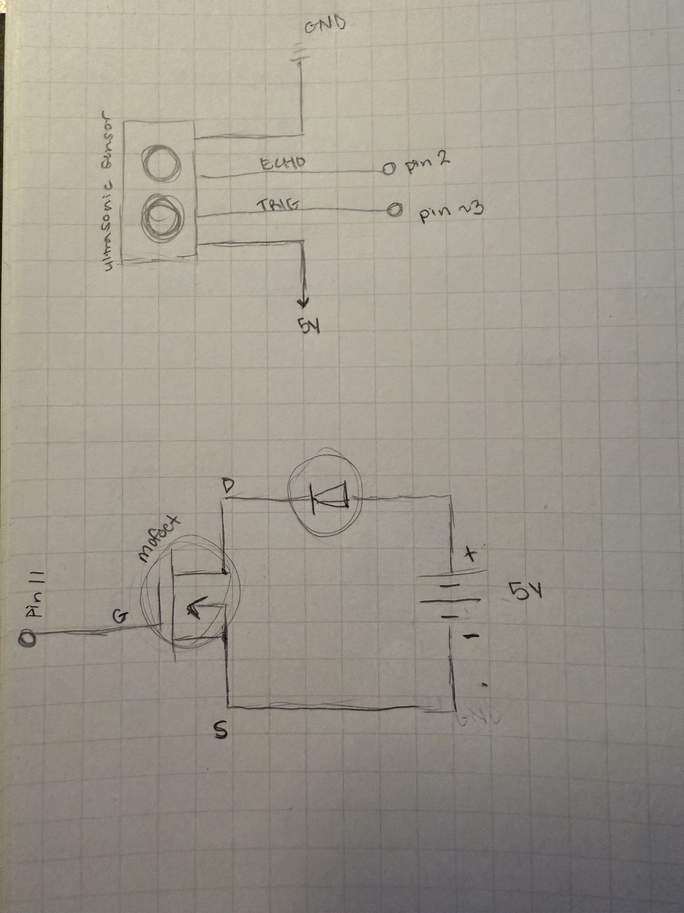
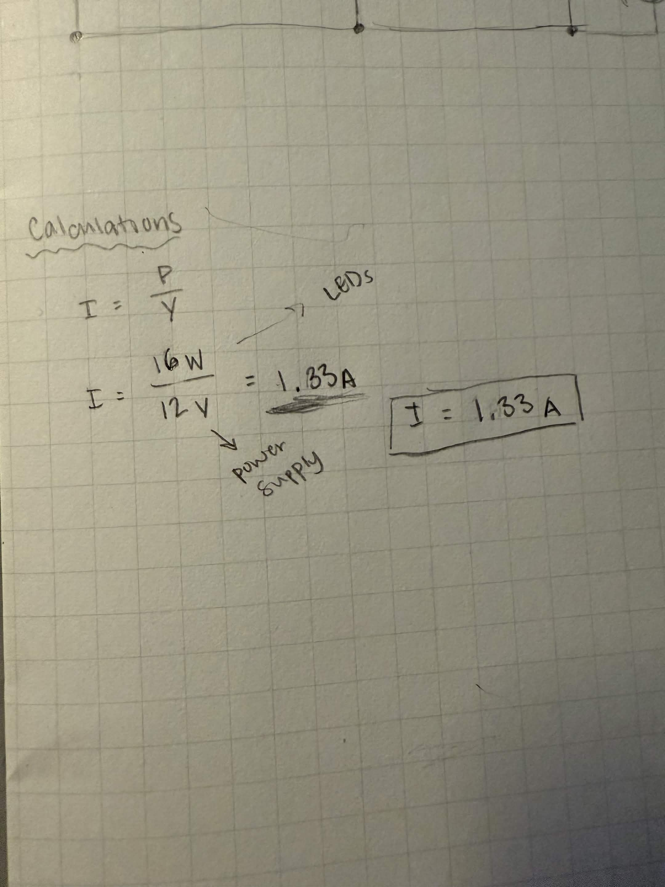
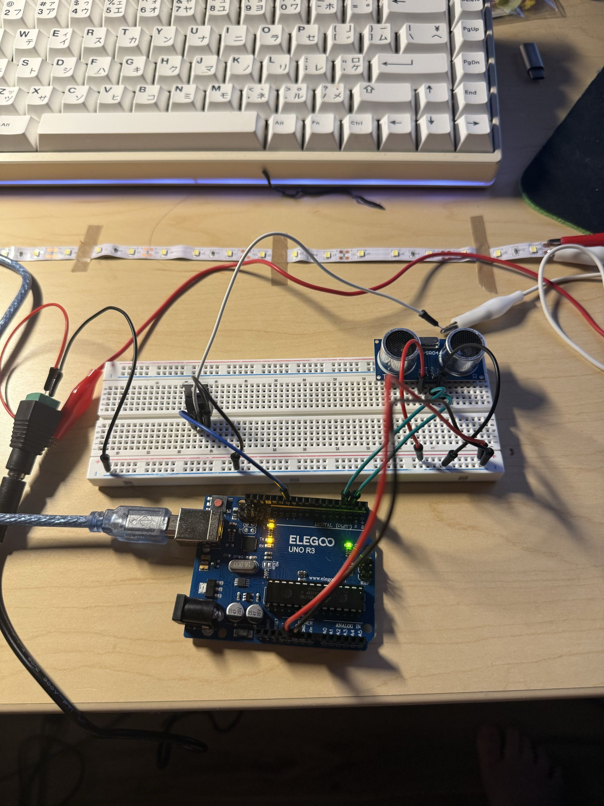
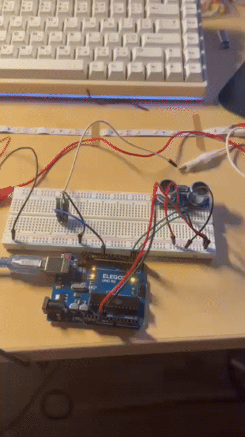
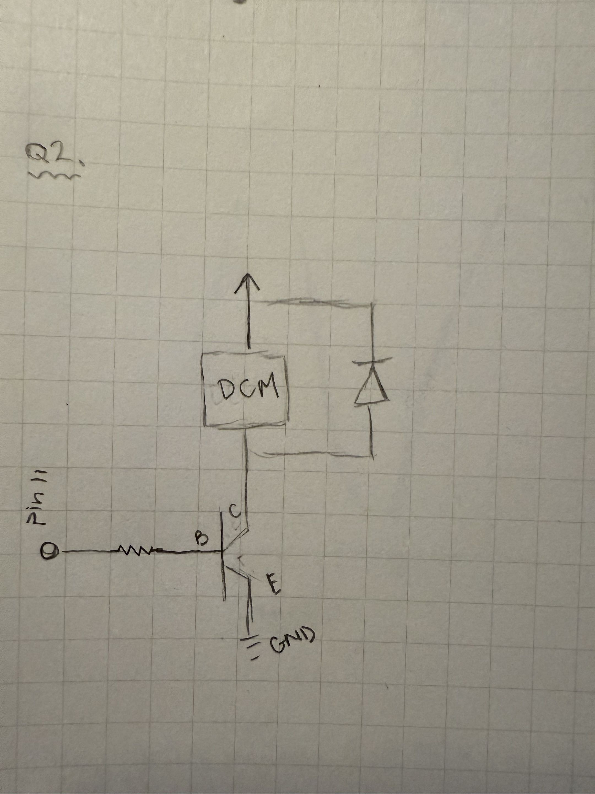
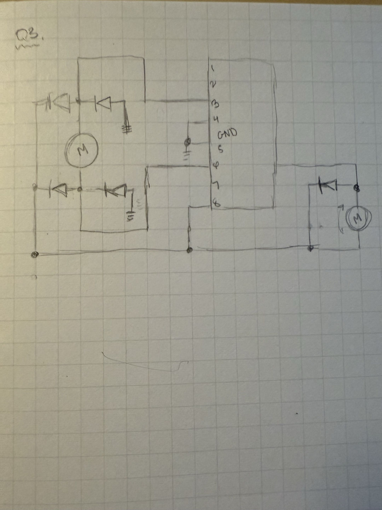

For this assignment, I designed and prototyped for LEDs in an LED strip to light up automatically when some is detected nearby, using an ultrasonic sensor. When someone comes within 50 cm, the Arduino will turn on the LED strip. After the person leaves or is out of the 50 cm range, the LED strip will stay on for 2 seconds before gradually turning off.

In this Schematic, the ultrasonic sensor's outer pins are connected to the Ardunio's 5V and GND that provide power for the circuit. The Trig pin is connected to digital pin 3 and the Echo pin is connected to digital pin 2.
The G pin (left pin) of the NMOSFET transistor is connected to the Arduino's digital pin 11, the D pin (middle pin) is connected to the negative side of the LED strip, and lastly the S pin (right pin) is connected to the GND.

To determine how much current the circuit uses, I used the current formula I = P / V. I substitued P for the LEDs 16 Watts listed on the LED strip packaging and 12 V from the power supply to substitute for V. Resulting in 1.33 Amps which is less than 1.5 Amps listed on the packaging, meaning the LED strip won't burn out!

This is my completed circuit. For this circuit, I used an Arduino, a ultrasonic sensor, a NMOSFET, a external power supply, a breadboard, alligator clips, and jumper wires. The ultrasonic sensor is connected to the positive and negative rails that are connected to the Arduino 5V and GND pins. The Trig pin of the ultrasonic sensor is connected to digital pin 3, while the Echo pin is connected to pin 2. The G pin (left pin) of the NMOSFET is connected to the Arduino pin 11, the D pin (middle pin) is connected to the negative side of the LED strip using a white alligator clip, and the S pin (right pin) is connected to the negative rail that is connected to the Ardunio GND. The positive side of the external power supply has a jumper wire that connects to the positive side of the LED strip, using a red alligator clip. As for the negative side of the power supply, theres a jumper wire that connects directly to the negative rail that is connected to the Arduino's GND.
This is the snippet of code I created on Arduino! The program takes the ultrasonic sensor to measure the distance of nearby objects. When an object is detected within 50 centimeters, the LED will turn on. When the object or person is not within range of the ultrasonic sensors detection range the LED strip will gradually turn off.
// Set the sensor pins.
const int trigPin = 3;
const int echoPin = 2;
// Set the MOSFET pin.
const int mosPin = 11;
// Store the LED brightness.
int brightness = 0;
// Store the last detection time.
unsigned long lastTimeDetect = 0;
// Set the distance detection.
const int detectDist = 50;
void setup() {
// Setting trig pin as an output
pinMode(trigPin, OUTPUT);
// Setting echopin as an input
pinMode(echoPin, INPUT);
// Setting mosfet pin as an output
pinMode(mosPin, OUTPUT);
//start serial communication
Serial.begin(9600);
}
// Repeat continuously
void loop() {
// Set trig pin to LOW
digitalWrite(trigPin, LOW);
// wait 2 micro seconds
delayMicroseconds(2);
// Set trig pin to HIGH
digitalWrite(trigPin, HIGH);
// wait 10 micro seconds
delayMicroseconds(10);
// Set trig pin to LOW
digitalWrite(trigPin, LOW);
// Reading how long echo stays high
long duration = pulseIn(echoPin, HIGH);
// Converting the reading into centimeters.
int distance = duration * 0.034 / 2;
// Checking if something is within 50 cm.
if (distance > 0 && distance <= detectDist) {
// Saves time when something is detected
lastDetectedTime = millis();
}
// After detected keep led on for 3 seconds.
if (millis() - lastDetectedTime < 3000 && lastDetectedTime != 0) {
// Increase LED brightness by 5
brightness = brightness + 5;
}
else {
// If 3 seconds pass without anything detected lower brightness
brightness = brightness - 5;
}
// Keep brightness between 0 and 255.
brightness = constrain(brightness, 0, 255);
// Set the LED brightness.
analogWrite(mosPin, brightness);
// Wait 20 milliseconds
delay(20);
}

This GIF shows the final product of my circuit and Arduino program. Whenever my hand is near and NOT touching the ultrasonic sensor, the LED strip turns on gradually. When I take my hand away, after 3 seconds, the LED strip slowly turns off.
- The MOSFET I have is the IRLZ44N. Looking at the datasheet the absolute maximum amount of current between pins 2 and 3 is 49 Amps


START
// Enable both motors.
Set pin 5 HIGH
Set pin 6 HIGH
// Move motors forward.
Set motor 1 input 1 HIGH
Set motor 1 input 2 LOW
Set motor 2 input 3 HIGH
Set motor 2 input 4 LOW
WAIT 1 second
// Move motors backward.
Set motor 1 input 1 LOW
Set motor 1 input 2 HIGH
Set motor 2 input 3 LOW
Set motor 2 input 4 HIGH
WAIT 1 second
// Move motor 1 forward and motor 2 backward.
Set motor 1 input 1 HIGH
Set motor 1 input 2 LOW
Set motor 2 input 3 LOW
Set motor 2 input 4 HIGH
WAIT 1 second
// Move motor 1 backward and motor 2 forward.
Set motor 1 input 1 LOW
Set motor 1 input 2 HIGH
Set motor 2 input 3 HIGH
Set motor 2 input 4 LOW
WAIT 1 second
STOP
- For this assignment, I did not use AI tools to complete this assignment. However, I used google and occasionally the built in AI in the search engine for clarifying questions. I used google to help me learn more syntax to use for my code that make my circuit more fluid/advanced.